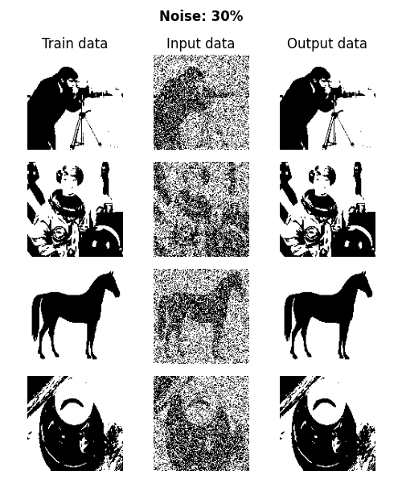
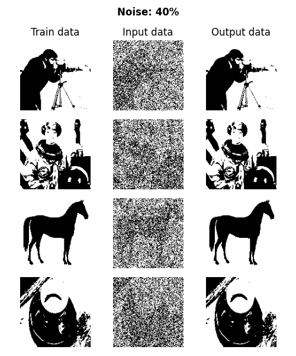
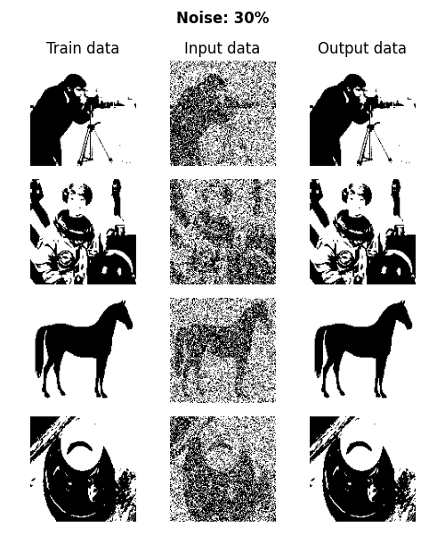
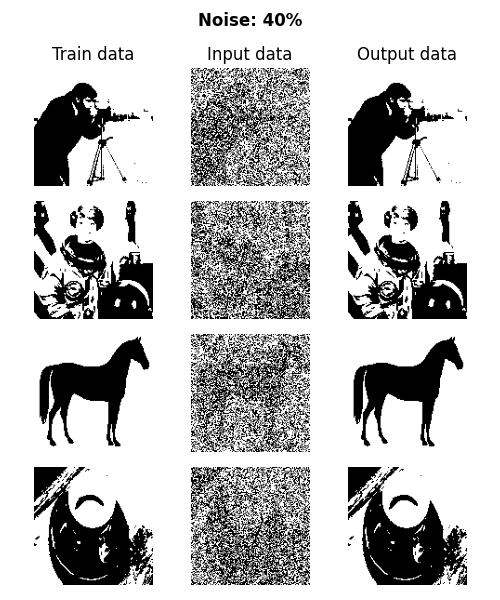

Hopfield Networks
January 19, 2025
A quick implementation of a Hopfield network in Python.
January 19, 2025
A quick implementation of a Hopfield network in Python.
Hopfield networks were one of the earliest generations of neural networks and were/are an important tool in understanding associative memory and learning dynamics. First introduced by John Hopfield in 1982, Hopfield networks are a form of recurrent neural network. Contrary to computer memory, where every piece of information is given an address and accessed by its memory address, content-addressable (or associative) memory retreives saved patterns when given incomplete or noisy input. This works by encoding the saved patterns as minima in an energy landscape, and the network naturally converges to the nearest minima when given an input.
A Hopfield network is a fully connected undirected simple graph, where every node is connected to every other node by an edge with some weight. Each node is a binary value (either -1 or +1). \(\pm\)1 is used instead of 0, 1 because it simplifies the dynamics and calculation of the energy of the network.
The energy function of the network is defined as $$ E = -\frac{1}{2} \displaystyle\sum_{i,j} w_{ij} s_i s_j $$ where \(w_{ij}\) is the weight between neruons \(i\) and \(j\), and \(s_i\) is the state of neuron \(i\).
The network is updated either synchonously or asynchronoously (each node one at a time or all nodes at once, respectively). Each neuron's state is computed as a function of the weighted sum of the other neurons: $$ s_i = \text{sign} \left(\displaystyle\sum_{j} w_{ij}s_j\right) $$
For a given pattern, the weights are computed according to a Hebbian Learning rule. The goal is to strengthen the connection (increase the weight) of nodes that are active at the same time (which is why we use \(\pm 1\)). For a Hopfield network with \(N\) nodes and a pattern \(\xi\), weights are computed as $$ w_{ij} = \xi_i \xi_j $$ If \(\xi_i\) and \(\xi_j\) are in the same state, their product is postive and the weight is bigger. Intuitively, this translates to each node having a larger impact on the state of the other.
To memorize multiple patterns \(\{\xi^\mu\}_{\mu=1}^P\), each weight is the sum of the weights for each pattern: $$ w_{ij} = \frac{1}{P} \displaystyle\sum_{\mu=1}^P \xi_i^\mu \xi_j^\mu $$
If we encode the state of the network as an \(N\)-dimensional vector, a synchronous update rule is given by multiplying by a \(N \times N\)-dimensional weight matrix. This weight matrix is given by the sum of the outer product of each pattern with itself: $$ \mathbf{W} = \frac{1}{P} \displaystyle\sum_{\mu=1}^P \xi^\mu \otimes \xi^\mu = \frac{1}{P} \displaystyle\sum_{\mu=1}^P {\xi^\mu}^\top \xi^\mu $$ To understand why this is has each memorized vector as the stable point of the network dynamics, consider a transition: $$ W \xi = (\xi \xi^\top) \xi = \xi (\xi^\top \xi) \propto \xi $$ since \(\xi^\top \xi\) is a scalar. Then, we simply superimpose the contributions of each memorized vector \(\xi\).
class HopfieldNetwork:
def __init__(self, patterns):
self.patterns = patterns
self.num_neurons = patterns.shape[1]
self.weights = self.create_weights(patterns)
def create_weights(self, patterns):
weights = np.zeros((self.num_neurons, self.num_neurons))
for pattern in patterns:
pattern = pattern.reshape(-1, 1)
weights += np.outer(pattern, pattern)
np.fill_diagonal(weights, 0) # no self-connections
return weights / patterns.shape[0]
def update_state(self, state):
net_inputs = self.weights @ state
state = np.sign(net_inputs)
return state
def energy(self, state):
return -0.5 * state @ (self.weights @ state)
def recall(self, initial_state, max_iterations=10):
state = initial_state.copy()
energy = self.energy(state)
for _ in range(max_iterations):
updated_state = self.update_state(state)
new_energy = self.energy(updated_state)
if new_energy == energy:
break
state = updated_state
energy = new_energy
return stateAs an example, consider a Hopfield network meant to store 128 x 128 px images.Using the above implementation to learn 4 patterns, the network is able to accurately recall the patterns with up to 40% of the pixels flipped. The specific code used is available for download here.
 



The Hopfield network is closely tied to the Ising model in statistical mechanics. In physics, the Ising model is a lattice structure used to describe ferromagnetic materials. In the Hopfield network, the neurons are analogous to spins at each lattice point, the weights represent the coupling strength between spins, and the energy function describes the total energy of the system.
An Ising model, where each lattice point is an electron with either spin up or down.
Source: The Ising Model and Counting GraphsWe can also introduce a temperature into the Hopfield network, which allows it to explore many more states and escape local minima. As the temperature decreases, the model settles into a single minima. Simulated annealing is a process by which the model starts at high temperature and "cools down" over time. This prevents the model from gettign stuck in local minima early on and increasing its chances of settling into a global minima (one of the memorized patterns).
Ramsauer et al. (2020) showed that attention mechanisms in transformers can be viewed as a continuous generalization of Hopfield Networks, implying that Transformers use something similar to associative memory. The same way that tokens attend to each other in transformers, patterns "attend" to each other in Hopfield networks, predicting which pattern to converge to, or which token to predict.